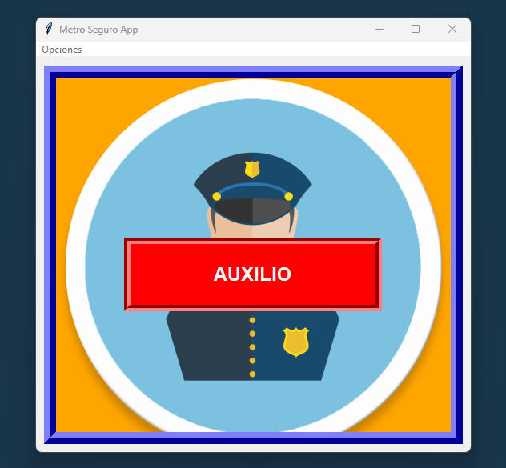

Tu app de seguridad para el Sistema de Transporte Colectivo Metro
MetroSeguro es una aplicación móvil diseñada para brindar auxilio inmediato a usuarios del Metro CDMX que sean víctimas de cualquier tipo de delito durante su viaje.
Activa una alerta inmediata que notifica a las autoridades del metro y policía más cercana.
Localización precisa dentro del sistema del metro para una respuesta más rápida.
Comunicación directa con el centro de control para reportar incidentes.
Disponible para iOS y Android
Descargar para Android Descargar para iOSPolicía del Metro: 555-555-5555
Emergencias: 911
Protección Civil: 555-555-5556